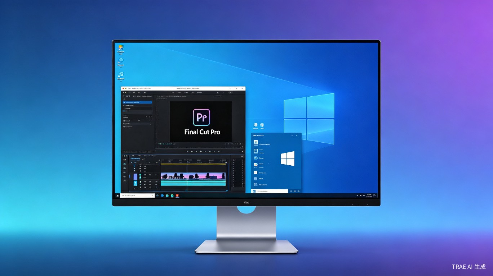
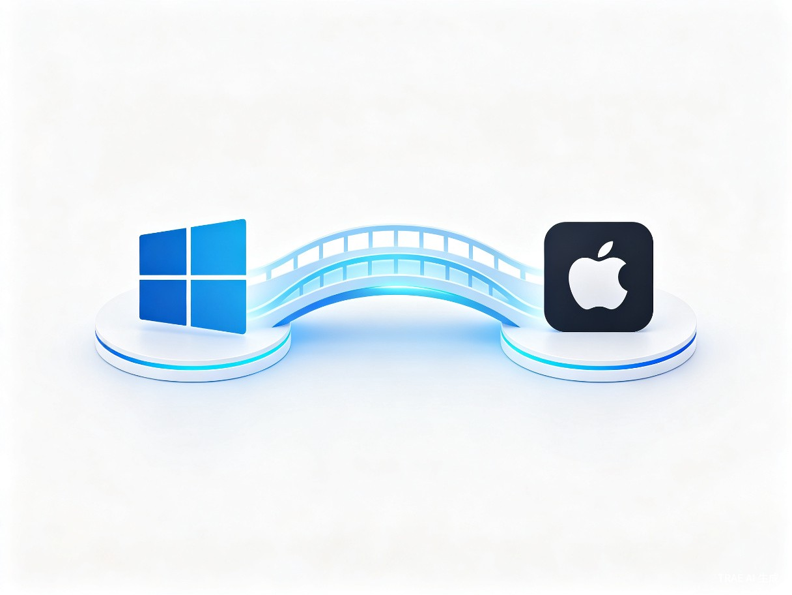

在 Windows 系统上，不使用虚拟机，丝滑运行 Mac 专属软件 —— 让 Final Cut Pro、Logic Pro、Keynote 等应用触手可及。

许多创作者和专业用户离不开 Windows 的高性能硬件生态，却常常因为 Final Cut Pro、Logic Pro、Xcode 等 Mac 专属软件而被迫妥协。MacBridge 正是为了解决这一矛盾而生 —— 它是一款 Windows 原生应用程序，通过兼容层技术让 Mac 应用直接在 Windows 上运行，无需虚拟机、无需双系统。
Windows 用户无法直接使用 Mac 专属软件，现有方案（虚拟机、双系统）体验差、资源消耗大。
想要使用 Final Cut Pro 进行视频剪辑，却发现 Windows 上根本没有官方版本，虚拟机方案又卡又吃内存。
Windows 桌面应用程序 —— 安装即用，像运行原生 Windows 软件一样运行 Mac 应用。
MacBridge 面向的核心用户是那些选择了 Windows 高性能硬件，却因为工作或创作需要而不得不使用 Mac 专属软件的人群。
依赖 Final Cut Pro 的磁力时间线和优化渲染流程，但 Windows 上只有替代品，项目迁移成本高。
Logic Pro 的音色库和 MIDI 工作流是多年积累的创作基础，换平台意味着重新学习。
需要使用 Xcode 进行开发调试，但主力机是 Windows 高配 PC，双系统切换严重影响效率。
Keynote 的动画效果和设计模板无可替代，但只能在 Mac 上制作，跨平台协作困难。
双系统需要重启切换，耗时数分钟打断工作流；虚拟机占用大量内存和 CPU，8GB 内存几乎无法运行；远程 Mac 方案需要额外硬件投入，网络延迟影响实时操作。
MacBridge 采用应用级兼容层架构，在 Windows 内核之上构建 macOS API 翻译层，让 Mac 应用的系统调用直接映射为 Windows 等效调用，无需模拟整个操作系统。

与当前主流的三种跨平台方案相比，MacBridge 在性能、便捷性和硬件要求方面都有显著优势。
| 对比维度 | MacBridge | 虚拟机（VMware / Parallels） | 双系统（Boot Camp） | 远程 Mac（MacStadium） |
|---|---|---|---|---|
| 启动速度 | 秒级启动 | 1-3 分钟 | 需重启系统 | 依赖网络 |
| 内存占用 | 约 200-500MB | 4-8GB+ | 独占系统 | 无本地占用 |
| CPU 开销 | 极低 | 高（全系统模拟） | 无额外开销 | 无本地开销 |
| GPU 加速 | 原生直通 | 有限支持 | 原生支持 | 串流压缩 |
| 最低内存要求 | 8GB | 16GB+ | 需分区 | 4GB |
| 使用便捷性 | 安装即用 | 需安装 macOS | 需重启切换 | 需配置连接 |
| 文件互通 | 直接访问 | 共享文件夹 | 需手动拷贝 | 需传输 |
MacBridge 的价值不仅在于技术突破，更在于它真正解决了跨平台用户长期以来的效率瓶颈和体验痛点。
无需重启、无需等待虚拟机启动，Mac 应用像 Windows 原生软件一样即时可用。创作者可以在同一个桌面同时使用 Premiere Pro 和 Final Cut Pro，工作流不再被打断。
不再需要 16GB 以上内存和高端 CPU 来运行虚拟机。MacBridge 的轻量架构让 8GB 内存的普通笔记本也能流畅运行 Mac 应用，大幅降低使用门槛。
Mac 应用直接融入 Windows 桌面环境，支持窗口拖拽、任务栏集成、文件拖放等原生操作，避免虚拟机中 macOS 进程对 Windows 系统资源的持续占用。
Windows 全球市场份额超过 70%，其中大量用户有跨平台软件需求。MacBridge 填补了这一空白，具有广阔的商业前景和用户增长潜力。
在 Windows 高配 PC 上运行 Final Cut Pro，利用 NVIDIA/AMD GPU 加速渲染，享受 Mac 独有的剪辑体验。
在 Windows 上使用 Logic Pro 的完整音色库和插件生态，配合专业声卡进行低延迟录音和混音。
使用 Xcode 编译和调试 iOS/macOS 应用，无需购买 Mac 电脑，在 Windows 工作站上完成全流程开发。
使用 Keynote 制作精美演示文稿，利用其独有动画和模板，直接在 Windows 上完成设计和展示。